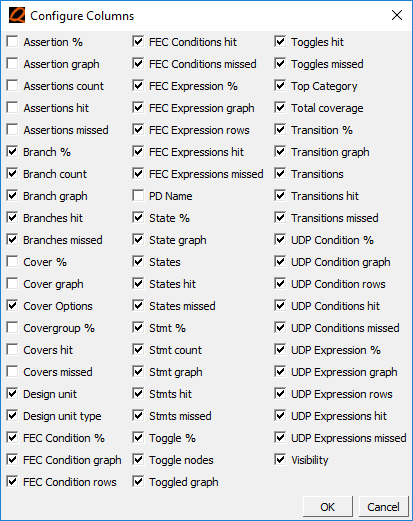
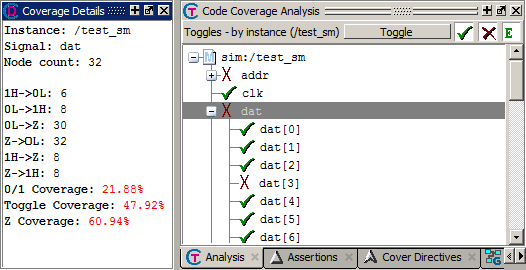
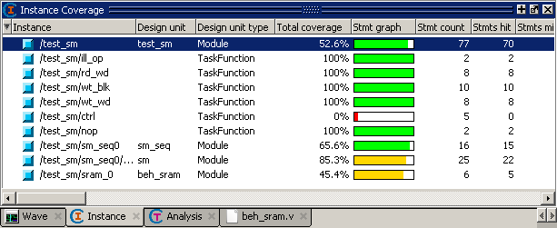

Viewing Coverage Data
Let’s
take a look at the coverage data displayed in different coverage
windows.
Procedure
- View
coverage data in the Structure (sim) window.
- Select the sim tab and use the horizontal scroll bar to view coverage data in the coverage columns. Coverage data is shown for each object in the design.
- Select
the Files tab
to switch to the Files window and scroll to the right. You can change
which coverage data columns are displayed by right clicking on any
column name, selecting Change Column Visibility, and
selecting columns from the popup list.Figure 1. Right-click a Column Heading to Show Column List
All checked columns are displayed. Unchecked columns are hidden. The status of every column, whether displayed or hidden, is persistent between invocations of Questa SIM.
- View
coverage data in the Statement Analysis view of the Code Coverage
Analysis window.
- If the
Statement Analysis view is not displayed in the Code Coverage Analysis
window, select Statement Analysis from the Analysis toolbar (Figure 2).Figure 2. Select Statement Analysis

- Select different files from the Files window. The Code Coverage Analysis window updates to show coverage data for the selected file in the Statement Analysis view.
- Double-click any entry in the Statement Analysis view to display that line in a Source window.
- If the
Statement Analysis view is not displayed in the Code Coverage Analysis
window, select Statement Analysis from the Analysis toolbar (Figure 2).
- View
toggle coverage details in the Coverage Details window.
- Switch to the Toggle Analysis view in the Code Coverage Analysis window by selecting the Toggle Analysis in the Analysis Toolbar (Figure 2).
- Click
the Details tab to open the Coverage Details window.
If the Details tab is not visible, select from the Main menu.
- Select
any object in the Toggle Analysis and view its coverage details
in the Coverage Details window (Figure 3).Figure 3. Coverage Details Window Undocked
- View
instance coverage data.
- Click
the Instance tab to switch to the Instance Coverage window. If the
Instance tab is not visible, select from
the Main menu.
The Instance Coverage window displays coverage statistics for each instance in a flat, non-hierarchical view. Double-click any instance in the Instance Coverage window to see its source code displayed in the Source window.
Figure 4. Instance Coverage Window
- Click
the Instance tab to switch to the Instance Coverage window. If the
Instance tab is not visible, select from
the Main menu.